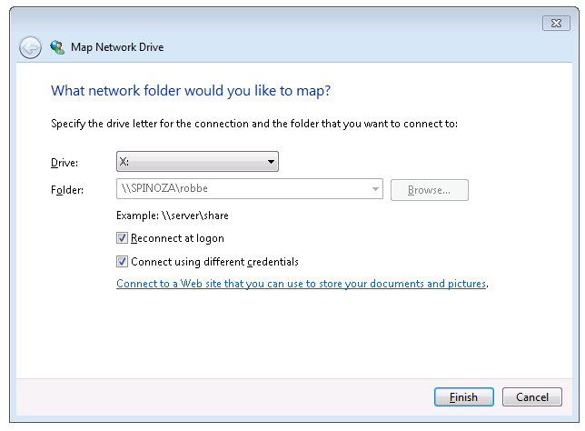
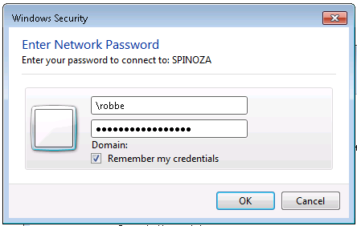
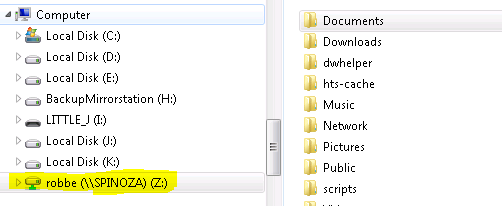

Samba
Robbe Van der Gucht, 02/11/2013
Om bestandsuitwisseling tussen mijn laptop(Netrunner-linux) en desktop(Windows 7) te vergemakkelijken heb ik besloten om SMB te gebruiken. Vanop mijn laptop heb ik mijn home-map gedeeld en met passwoord beschermd. Om ook gemakkelijk bestanden uit te wisselen met andere gezinsleden heb ik ook een publieke map aangemaakt. Dit is een verslag van mijn setup.
Het aanmaken van de map die publiek zal gedeeld worden.
mkdir /pubshare
chmod 777 /pubshareDe inhoud van /etc/samba/smb.conf.
[global]
server string = Samba %v on %h
workgroup = RAGEGROUP
browseable = yes
guest ok = yes
guest account = nobody
valid users = nobody, robbe
public = yes
map to guest = Bad User
[robbe]
path = /home/robbe/
writeable = yes
browseable = yes
valid users = robbe
admin users = robbe
guest ok = no
[public]
path = /pubshare
writeable = yesDe meeste lijnen spreken wat voor zich behalve misschien map to guest = Bad User.
Die zorgt ervoor dat mensen die proberen te verbinden met een onbestaande gebruikersnaam
als guest ingelogd worden en dus gemakkelijk op het publieke volume toegang krijgen.
We testen onze configuratie met testparm.
robbe@spinoza:~$ testparm
Load smb config files from /etc/samba/smb.conf
rlimit_max: increasing rlimit_max (1024) to minimum Windows limit (16384)
Processing section "[robbe]"
Processing section "[public]"
Loaded services file OK.
Server role: ROLE_STANDALONE
Press enter to see a dump of your service definitions
[global]
workgroup = RAGEGROUP
server string = Samba %v on %h
map to guest = Bad User
idmap config * : backend = tdb
valid users = nobody, robbe
guest ok = Yes
[robbe]
path = /home/robbe/
valid users = robbe
admin users = robbe
read only = No
guest ok = No
[public]
path = /pubshare
read only = NoNu moeten we nog de gebruiker robbe aanmaken zodat ik over het netwerk kan inloggen.
smbpasswd -a robbeZiezo en nu kunnen we vanaf onze Desktop deze schijf aankoppelen.

We vinken aan dat we met andere credentials willen inloggen.

Geniet van je netwerk aangekoppelde opslag :-).
